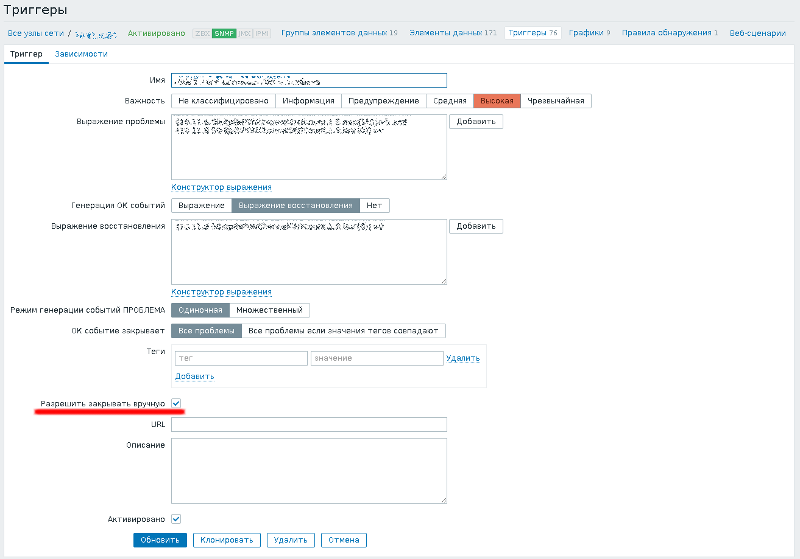
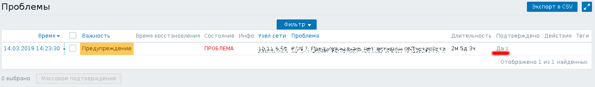
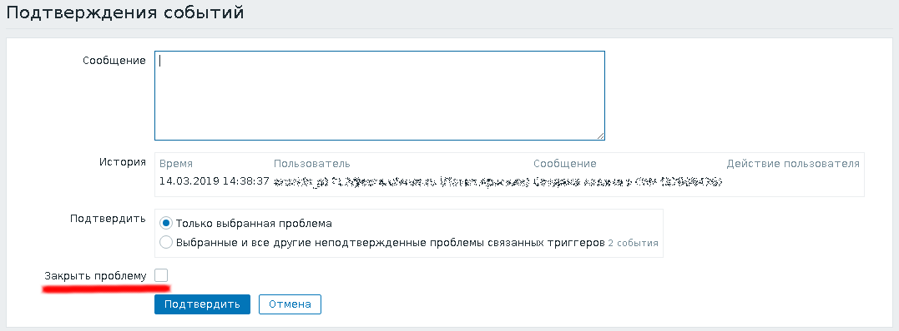

В Zabbix версии 3.2 появилась возможность закрывать проблемы вручную, которая бывает очень полезной, если невозможно сформулировать выражение, при котором проблема должна закрываться автоматически. Например, это может оказаться полезным в триггерах, которые срабатывают при появлении определённой строчки в каком-либо журнале, или если информация о проблеме поступает в виде трапа в элемент данных типа Zabbix-траппер или SNMP trap, особенно если сообщения о восстановлении не предусмотрены или потерялись.
Вот так выглядит страница настройки триггера, у которого включена возможность ручного закрытия проблем:
Для ручного закрытия проблемы нужно найти проблему и перейти по ссылке в колонке подтверждения. Например, ниже показана страница просмотра проблем с одним из таких триггеров:
Для ручного закрытия проблемы нужно написать сообщение, объясняющее причину ручного закрытия проблемы, и отметить соответствующую галочку:
Однако, реализована эта функция оказалась довольно странным образом: чтобы воспользоваться галочкой, нужно иметь права редактирования группы узлов, на одном из которых может сработать проблема, требующая ручного закрытия. Даже если предположить, что пользователь, желающий закрыть проблему, не захочет менять настройки наблюдаемых узлов или удалять их, у него остаётся возможность закрыть любую проблему, которая ему не нравится, если у него есть доступ на редактирование соответствующего узла. Для этого нужно всего лишь зайти в настройки триггера, который породил проблему, выставить галочку, разрешающую ручное закрытие, закрыть проблему и вернуть галочку обратно. На мой взгляд, польза от такой настройки сомнительна, потому что пользователь, имеющий доступ к редактированию настроек, и раньше мог закрыть любую проблему. Для этого ему нужно было всего лишь временно поменять выражение в триггере и вернуть его обратно, или удалить и создать триггер заново. Новая галочка ручного закрытия лишь дала возможность сделать это чуть-чуть корректнее :)
Итак, думаю что вам уже стало понятно, что лучше дать возможность всем закрывать видимые ими проблемы вручную, чем давать им доступ на редактирование настроек узлов. Для этого пересоберём пакет для Debian, внеся в исходные тексты веб-интерфейса соответствующие исправления.
Добавим официальные репозитории с файлами для сборки пакетов в файл /etc/apt/sources.list:
deb-src http://repo.zabbix.com/zabbix/3.4/debian stretch main
Установим ключ репозитория Zabbix и обновим список доступных пакетов:
# wget http://repo.zabbix.com/zabbix-official-repo.key -O - | apt-key add - # apt-get update
Установим необходимые для сборки пакетов Zabbix зависимости и скачаем файлы для сборки пакетов:
# apt-get build-dep zabbix # apt-get source zabbix
Ставим пакеты с инструментами, которые пригодятся нам для пересборки пакета:
# apt-get install dpkg-dev devscripts fakeroot
Переходим в каталог zabbix-3.4.12-1+stretch, в который распаковались исходные тексты пакета, скачиваем и накладываем заплатку:
# cd zabbix-3.4.12-1+stretch # wget zabbix3_4_12_manual_close_event_acknowledge.patch # patch -Np0 < zabbix3_4_12_manual_close_event_acknowledge.patch
Текст самой заплатки:
Description: Fixed manual closing problems for users without rights to edit trigger
Fixed manual closing problems for users without rights to edit trigger
Author: Vladimir Stupin <vladimir@stupin.su>
Last-Update: <2019-03-01>
--- zabbix-3.4.12-1+wheezy.orig/frontends/php/app/controllers/CControllerAcknowledgeEdit.php
+++ zabbix-3.4.12-1+wheezy/frontends/php/app/controllers/CControllerAcknowledgeEdit.php
@@ -132,7 +132,6 @@ class CControllerAcknowledgeEdit extends
'output' => [],
'triggerids' => $triggerids,
'filter' => ['manual_close' => ZBX_TRIGGER_MANUAL_CLOSE_ALLOWED],
- 'editable' => true,
'preservekeys' => true
]);
--- zabbix-3.4.12-1+wheezy.orig/app/controllers/CControllerAcknowledgeCreate.php 2019-03-01 16:15:28.931300319 +0500
+++ zabbix-3.4.12-1+wheezy/app/controllers/CControllerAcknowledgeCreate.php 2019-03-01 16:15:14.211550047 +0500
@@ -87,7 +87,6 @@
'output' => [],
'triggerids' => $triggerids,
'filter' => ['manual_close' => ZBX_TRIGGER_MANUAL_CLOSE_ALLOWED],
- 'editable' => true,
'preservekeys' => true
]);
--- zabbix-3.4.12-1+wheezy.orig/include/classes/api/services/CEvent.php 2019-03-01 16:18:17.636438283 +0500
+++ zabbix-3.4.12-1+wheezy/include/classes/api/services/CEvent.php 2019-03-01 16:18:24.272325613 +0500
@@ -860,7 +860,6 @@
'eventids' => $eventids,
'source' => EVENT_SOURCE_TRIGGERS,
'object' => EVENT_OBJECT_TRIGGER,
- 'editable' => true
]);
if ($events_count != count($events)) {
Если всё прошло успешно, то можно внести комментарии к изменениям. Запускаем команду для редактирования журнала изменений:
# dch -i
И приводим последнюю запись к подобному виду:
zabbix (1:3.4.12-1+stretch-p2) UNRELEASED; urgency=low * Non-maintainer upload. * Fixed manual closing problems for users without rights to edit trigger -- Vladimir Stupin <vladimir@stupin.su> Thu, 07 Mar 2019 11:04:14 +0500
Теперь можно собрать двоичные пакеты и исправленный пакет с исходными текстами:
# dpkg-buildpackage -us -uc -rfakeroot
В каталоге выше появятся собранные пакеты, которые можно установить при помощи dpkg. Нас прежде всего интересует пересобранный пакет с веб-интерфейсом Zabbix:
# dpkg -i zabbix-frontend-php_3.4.12-1+stretch-p2_all.deb